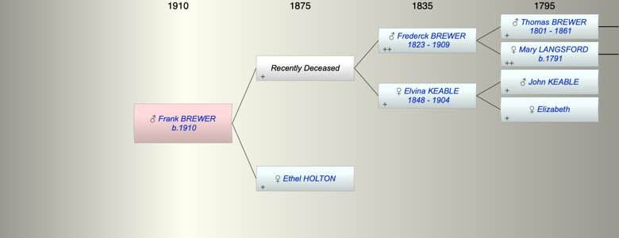

| [Index] |
| Frank BREWER (1910 - ) |
|  |
| b. 23 Dec 1910 at Merton, Surrey |
| Near Relatives of Frank BREWER (1910 - ) | ||||||
| Relationship | Person | Born | Birth Place | Died | Death Place | Age |
| Grandfather | Frederck BREWER | 16 Sep 1823 | Exminster | 1909 | Croydon | 86 |
| Grandmother | Elvina KEABLE | 1848 | LIketshall, Suffolk | 1904 | Chertsey, Surrey | 56 |
| Father | Living or Recently Deceased | |||||
| Mother | Ethel Annie HOLTON | |||||
| Self | Frank BREWER | 23 Dec 1910 | Merton, Surrey | |||
| Sister | Kathleen Mary BREWER | 1909 | Merton, Surrey | |||
| Brother | Living or Recently Deceased | |||||
| Sister in Law | Living or Recently Deceased | |||||
| Events in Frank BREWER (1910 - )'s life | |||||
| Date | Age | Event | Place | Notes | Src |
| 23 Dec 1910 | Frank BREWER was born | Merton, Surrey | bap 26 Feb 1911 Merton | ||
| Created on a Mac™ using iFamily for Mac™ on 15 Sep 2023 |